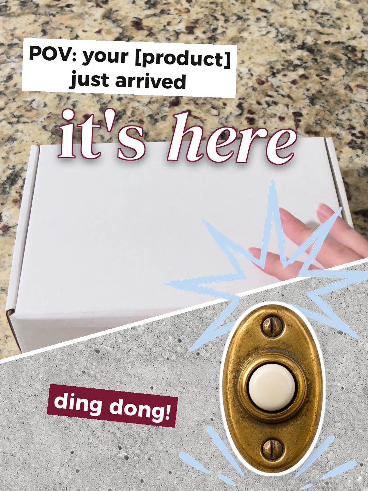

A 25-second product Reel that follows one parcel from your table to your customer's hands. Here's every clip to film, in order, with where to put your phone.

how it looks finished
The parcel landing on the doorstep or sitting there waiting. Start recording before it lands so you catch the drop.
Phone: propped at knee height, facing the door. Daylight from the side shows the box best.
Pick one: you packing it at your table, handing it to the courier, or the parcel in a bag on the move.
Phone: above the table for packing. Three seconds is short, so start on the action: the tape going on, the hand-off.
Hands opening it: lid off, tissue back, the product lifted out. This is the longest clip, so let it breathe.
Phone: straight above the box, or across the table at eye level. Get the lid off within the first 2 seconds.
Your product doing its job in a real place: the candle lit on a shelf, the mug in a hand, the brush in hair.
Phone: close, at the height you'd see it in real life. Real rooms look better here than a plain backdrop.
film all four in one go: one parcel, one afternoon
They go in this order over the clips. Keep each line to 1 to 3 words: a slash starts a new line.
| On screen | Your version, for example |
|---|---|
| POV: your [product] / just arrived | POV: your candle / just arrived |
| [out for delivery...] | out for delivery... |
| [delivered!] | delivered! |
| [what's inside?] | what's inside? |
| [packed with / love + a little / surprise] | packed with / love + a little / surprise |
| comment "[KEYWORD]" | comment "CANDLE" |
Every order gets packed by hand, card and all. Which one would you open first? Comment "[KEYWORD]" and I'll send you the link.